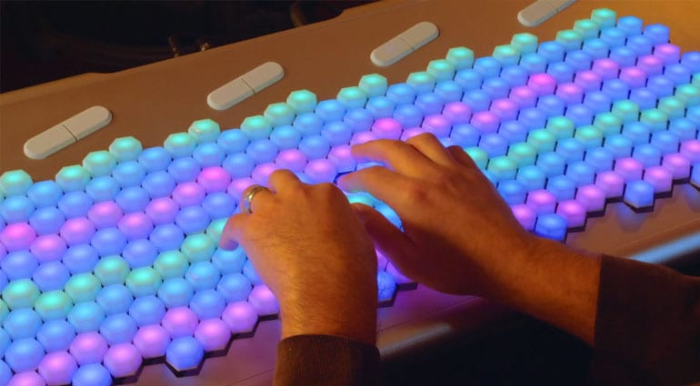

### Project Proposal
<img src="piano.jpeg"width="400">

For my final project, I will attempt to design a "universal keyboard" of sorts, the purpose of which will be to serve as an instrument capable of playing in many global tonal systems with equivalent ease.
The piano has long served as the "baseline" instrument which all musicians of serious study are expected to understand to some degree. It also serves as the instrument through which music theory is studied and practiced most often. Even the global standard for musical notation has close ties to the structure and underlying tonality of the European piano.
As music becomes increasingly globalized and artists work to actively sustain and share global music traditions, I believe that a need has arisen for a new standard instrument with which all types of music can be accessed.
An early attempt at designing an instrument of this sort already exists: the Lumatone (pictured above.) Through the prototyping process, I will be using the Lumatone as a starting point, both to replicate for practice and to edit for greater modularity and culturally sustaining design.